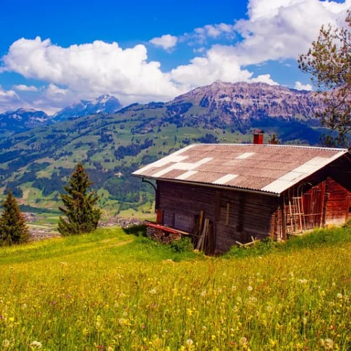
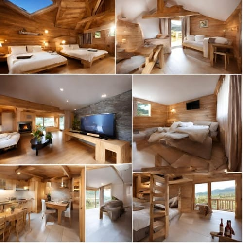
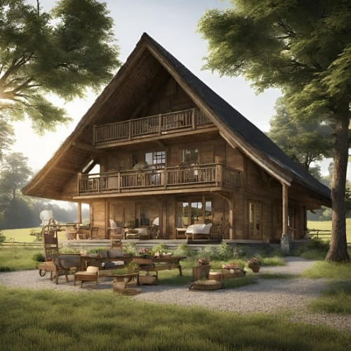

Descubra o encanto do Campo Rural, um hotel fazenda que combina a serenidade do campo com o conforto moderno. Localizado em meio a paisagens pitorescas, oferecemos trilhas cênicas, um lago tranquilo e a companhia de animais amigáveis, incluindo pandas, nossa paixão especial. Com culinária deliciosa e aconchegantes acomodações, o Campo Rural é o destino perfeito para uma escapada memorável. Venha viver essa experiência única e criar lembranças inesquecíveis.
No Campo Rural, oferecemos diversas opções de acomodação para atender às suas necessidades e preferências.
Chalé para Família: Espaçoso e ideal para desfrutar de momentos em família.
Chalés para Casal: Dois chalés exclusivos, perfeitos para escapadas românticas.
Chalé Grande: Acomoda até 15 pessoas, ótimo para grupos de amigos.
Trilhas Ecológicas: Explore a natureza exuberante em trilhas cênicas.
Pesca Esportiva: Desfrute de momentos relaxantes à beira do lago.
Observação de Animais: Conheça e interaja com os animais da fazenda.
Passeios a Cavalo: Descubra a região em cavalgadas emocionantes.
Convívio com Pandas: Encante-se com nossos adoráveis pandas.
Piqueniques ao Ar Livre: Aproveite a área verde para momentos especiais.
Atividades para Crianças: Diversão garantida para os pequenos.
Fogueiras Noturnas: Desfrute de noites aconchegantes ao redor da fogueira.
Relaxamento: Descontraia-se em meio à tranquilidade do campo.
Informações de contato, formulário de contato e mapa de localização.